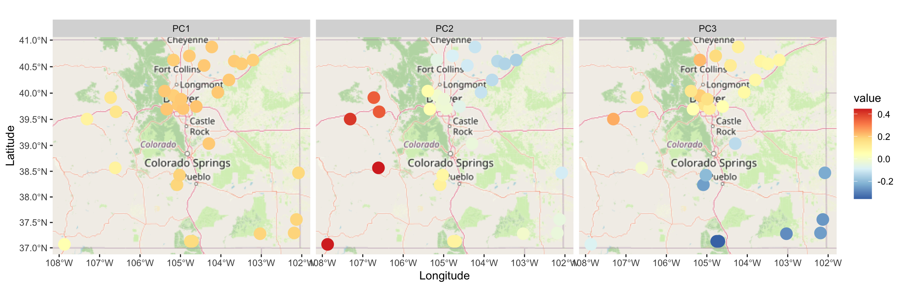

Analysis of Monthly Precipitation in Colorado
Load the packages and data
Check linearity
ggplot( ColoradoPrecip, aes( x=VALDEZ, y=WETMORE) ) + geom_point() + theme_bw() +
ggplot( ColoradoPrecip, aes( x=TOWNER, y=STONINGTON) ) + geom_point() + theme_bw() +
ggplot( ColoradoPrecip, aes( x=CARDIFF, y=NORTHGLENN) ) + geom_point() + theme_bw()
Derive eigenvectors and eigenvalues
head(ColoradoPrecip) date VALDEZ WETMORE WATKINS MOUNTAINVIEW HIDDENVALLEY MCCOY STERLING
1 2010-01-01 12.6 7.7 4.3 7.0 6.9 13.6 0.8
2 2010-02-01 28.5 20.3 17.3 25.4 27.7 17.4 12.2
3 2010-03-01 41.3 42.9 32.2 49.7 43.8 17.7 24.8
4 2010-04-01 24.0 25.7 59.2 72.3 62.1 27.8 75.8
5 2010-05-01 25.8 26.7 51.7 48.5 40.6 27.5 65.6
6 2010-06-01 24.0 18.2 60.1 51.5 51.4 30.6 102.6
TOWNER BELLVUE SUPERIOR STONINGTON WALLSTREET CALHAN UTLEYVILLE GLENDALE
1 7.9 3.5 7.2 7.8 8.2 6.3 12.8 6.5
2 9.4 14.4 27.0 15.0 27.5 15.3 18.5 23.3
3 29.8 39.2 55.1 31.5 38.4 34.1 42.7 43.5
4 44.8 88.6 87.5 27.2 64.3 42.7 30.3 63.6
5 49.4 63.2 53.2 43.1 46.8 50.3 33.1 48.2
6 31.8 69.9 57.4 48.3 55.2 52.3 39.1 51.3
FORTMORGAN BONDAD NUNN CARDIFF NORTHGLENN OHIO LYCAN SEGUNDO EDWARDS CORNISH
1 0.9 52.6 2.3 19.8 6.1 20.7 8.9 12.5 13.3 2.0
2 6.9 36.3 13.4 31.4 22.2 32.0 13.6 28.1 18.9 10.6
3 22.2 34.8 31.9 35.6 45.6 48.7 33.1 38.9 26.1 25.1
4 64.6 20.4 76.3 38.2 74.3 32.0 33.2 25.6 31.5 64.8
5 49.5 4.3 59.4 29.6 50.5 14.1 40.1 24.9 25.6 53.8
6 78.3 5.8 76.0 28.3 55.9 20.6 38.3 22.5 29.0 78.6
HOYT GROVER STONEHAM PENROSE WILLARD
1 2.3 1.2 1.0 6.4 0.9
2 10.2 9.4 7.7 17.6 9.0
3 26.8 20.7 20.0 40.2 23.1
4 60.1 62.5 70.8 30.5 69.3
5 52.1 59.2 61.8 29.5 61.4
6 73.1 82.1 91.0 21.5 95.1Plot the ratio of eigenvalues
Note: prcomp() stores \(\sqrt{\lambda_1},\ldots,\sqrt{\lambda_n}\):
ColoradoEV <- data.frame( m=1:30, Ratio = cumsum(PCA$sdev^2) / sum(PCA$sdev^2) )
ggplot( ColoradoEV, aes(x=m, y=Ratio) ) + geom_point() +
geom_abline( intercept = 0.9, slope = 0, linewidth=1.5 ) + theme_bw() +
ggtitle("Proportion of variance explained")
What do we conclude?
Plot eigenvectors
We attach the eigenvectors to the spatial sites
ColoradoCities <- ColoradoCities %>%
mutate( PC1 = PCA$rotation[,1], PC2 = PCA$rotation[,2], PC3 = PCA$rotation[,3] ) %>%
pivot_longer( cols=PC1:PC3, names_to="PC" )Visualize the eigenvectors
ggplot( ColoradoCities, aes( x=LONG, y=LAT) ) +
facet_wrap( ~PC ) +
annotation_map_tile() +
geom_spatial_point( aes(color=value), size=5 ) +
scale_color_distiller( palette="RdYlBu" ) +
labs( x="Longitude", y="Latitude", color="value" )